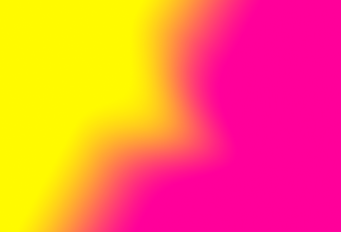

Janneke van der Putten – Solo
18.5.2018
Terrazza MAR
Ravenna
18.00
Attraverso l'utilizzo della voce, intesa come strumento guida nell'esplorazione fisica e sonora del paesaggio, Janneke van der Putten indaga lo spazio terrazza del Mar, realizzando una performance unica in cui le coordinate di relazione tra l'orientamento dell'edificio, il mare, la costa ed il levante, diventano elementi funzionali all'espressione cinetica e sonora.